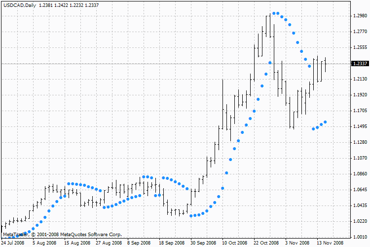
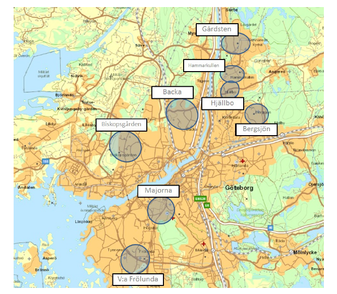

„Niniejsza prezentacja jest efektem wspólnych prac Domu Maklerskiego TMS Brokers S.A. oraz Pana Tomasza Waszczyka
Materiały zawarte w niniejszej prezentacji mają charakter edukacyjny i nie stanowią działalności maklerskiej polegającej na doradztwie inwestycyjnym lub wydawaniu rekomendacji o charakterze ogólnym. Zaprezentowane podczas warsztatów (w tym w niniejszej prezentacji) algorytmy mają charakter jedynie poglądowy w celu zobrazowania i nauki języka programowania modułu Expert Advisor dla systemu transakcyjnego MetaTrader. Korzystając z algorytmów klient powinien mieć na względzie, że:
1. Klient wykorzystuje mechanizmy algorytmiczne na własne ryzyko i odpowiedzialność.
2. Klient ponosi pełną odpowiedzialność za straty lub utracone korzyści związane z realizacją zleceń za pomocą mechanizmów algorytmicznych. Dotyczy to także prowizji, jakie Klient będzie zobowiązany pokryć w związku z transakcjami, które będą zawierane w oparciu o algorytm, nawet przy ich znacznej ilości.
3. Klient odpowiada za opóźnione wygenerowanie lub niewygenerowanie lub błędne wygenerowanie zleceń za pomocą mechanizmów algorytmicznych. W szczególności Klient ponosi odpowiedzialność za ww. zdarzenia powstałe w wyniku błędów w oprogramowaniu mechanizmów algorytmicznych.
4. Nie można zagwarantować osiągnięcia określonego wyniku finansowego na transakcjach zawartych z wykorzystaniem mechanizmów algorytmicznych.
5. Transakcje realizowane za pomocą mechanizmów algorytmicznych traktowane są jako transakcje zawierane przez Klienta.
6. Składanie, usuwanie lub modyfikowanie zleceń z wykorzystaniem mechanizmów algorytmicznych traktowane jest jako zlecenia złożone przez Klienta.
7. W wersji webowej oraz mobilnej systemu transakcyjnego może nie istnieć możliwość uruchomienia strategii automatycznych.
8. Wszelkie przykładowe strategie algorytmiczne zaprezentowane w czasie niniejszego szkolenia mają jedynie charakter edukacyjny i nie powinny być stosowne na rachunkach rzeczywistych.
Dom Maklerski TMS Brokers S.A. podlega nadzorowi Komisji Nadzoru Finansowego i prowadzi działalność maklerską na podstawie zezwolenia z dnia 26 kwietnia 2004 r. (KPWiG-4021-54-1/2004). Kontakt: Skylight Ul. Złota 59; 00-120 Warszawa, Polska; Tel.: +48 22 27 66 200”
Agenda
- Uruchomienie strategii z poprzedniego szkolenia
- Odpowiedź na parę pytań dotyczących strategii
- Implementacja skryptu zamykającego wszystkie otwarte zlecenia
- Zabezpieczenie naszego automatu transakcyjnego
- Zmienna predefiniowana Point
- Metody ustawiania zlecenia stop loss
- . . .
Przypomnienie z części pierwszej szkolenia
Cały kod źródłowy
#property copyright "Tomasz Waszczyk"
#property link "https://www.waszczyk.com"
#property version "1.00"
#property strict
#define MAGIC_NUMBER 20151025
#define OPEN_BUY_SIGNAL 1
#define OPEN_SELL_SIGNAL -1
#define NO_SIGNAL 0
// slowo kluczowe extern pozwala uzytkownikowi wprowadzic wartosci
//zmiennych za pomoca okna eksperta
extern int OkresSzybkiejSredniej = 10;
extern int OkresWolnejSredniej = 50;
// 0.1 = 1 pip
extern int StopLoss = 500;
extern int TakeProfit = 1600;
// wolumen transakcji
extern double Lots=1;
Jak uruchomić strategię z poprzedniego szkolenia ?
Dlaczego potrzebujemy numValues = 3 ?
void MaAktualneWartosci(double &ma[],int maPeriod,int numValues=3)
{
// i is the index of the price array to calculate the MA value for.
// e.g. i=0 is the current price, i=1 is the previous bar's price.
for(int i=0; i< numValues; i++)
{
ma[i]=iMA(NULL,0,maPeriod,0,MODE_SMA,PRICE_CLOSE,i);
}
}
Przetestujmy naszą strategię, rodzaje testów
- Forward testing
- Backtesting
Jak zabezpieczać naszą pracę ?
DLL
Library
Co to jest zmienna predefiniowana Point
double OpenPrice = Ask;
if(StopLoss > 0) double BuyStopLoss = OpenPrice – (StopLoss * Point);
// 1.1300 - (30 * 0.0001) = 1.1270
Funkcja która pokazuje prawdziwą liczbę pips
double Pips(string paraWalutowa)
{
int CalcDigits = MarketInfo(Currency,MODE_DIGITS);
if(CalcDigits == 2 || CalcDigits == 3) double CalcPoint = 0.01;
else if(CalcDigits == 4 || CalcDigits == 5) CalcPoint = 0.0001;
return(CalcPoint);
}
Ile pracy wymaga...
programowanie automatycznych...
... strategii transakcyjnych ...
... dużo, bardzo dużo oraz należy handlować manualnie.
Funkcja która oblicza poślizg automatycznie
int GetSlippage(string Currency, int SlippagePips)
{
int CalcDigits = MarketInfo(Currency,MODE_DIGITS);
if(CalcDigits == 2 || CalcDigits == 4) double CalcSlippage = SlippagePips;
else if(CalcDigits == 3 || CalcDigits == 5) CalcSlippage = SlippagePips * 10;
return(CalcSlippage);}
Metody ustawiania SL
int liczbaSwiec = 10;
int LowestShift = iLowest(NULL,0,MODE_LOW,liczbaSwiec,0);
double BuyStopLoss = Low[LowestShift];
Alternatywny sposób ustawiania SL - Parabolic SAR

SAR(i) = SAR(i-1)+PRZYSPIESZENIE*(CENA_POPRZEDNIA(i-1)-SAR(i-1))
Co sądzę o sprzedawanych automatach?
“Nie ma darmowych obiadów.”
Ciekawostka z podróży

„Niniejsza prezentacja jest efektem wspólnych prac Domu Maklerskiego TMS Brokers S.A. oraz Pana Tomasza Waszczyka
Materiały zawarte w niniejszej prezentacji mają charakter edukacyjny i nie stanowią działalności maklerskiej polegającej na doradztwie inwestycyjnym lub wydawaniu rekomendacji o charakterze ogólnym. Zaprezentowane podczas warsztatów (w tym w niniejszej prezentacji) algorytmy mają charakter jedynie poglądowy w celu zobrazowania i nauki języka programowania modułu Expert Advisor dla systemu transakcyjnego MetaTrader. Korzystając z algorytmów klient powinien mieć na względzie, że:
1. Klient wykorzystuje mechanizmy algorytmiczne na własne ryzyko i odpowiedzialność.
2. Klient ponosi pełną odpowiedzialność za straty lub utracone korzyści związane z realizacją zleceń za pomocą mechanizmów algorytmicznych. Dotyczy to także prowizji, jakie Klient będzie zobowiązany pokryć w związku z transakcjami, które będą zawierane w oparciu o algorytm, nawet przy ich znacznej ilości.
3. Klient odpowiada za opóźnione wygenerowanie lub niewygenerowanie lub błędne wygenerowanie zleceń za pomocą mechanizmów algorytmicznych. W szczególności Klient ponosi odpowiedzialność za ww. zdarzenia powstałe w wyniku błędów w oprogramowaniu mechanizmów algorytmicznych.
4. Nie można zagwarantować osiągnięcia określonego wyniku finansowego na transakcjach zawartych z wykorzystaniem mechanizmów algorytmicznych.
5. Transakcje realizowane za pomocą mechanizmów algorytmicznych traktowane są jako transakcje zawierane przez Klienta.
6. Składanie, usuwanie lub modyfikowanie zleceń z wykorzystaniem mechanizmów algorytmicznych traktowane jest jako zlecenia złożone przez Klienta.
7. W wersji webowej oraz mobilnej systemu transakcyjnego może nie istnieć możliwość uruchomienia strategii automatycznych.
8. Wszelkie przykładowe strategie algorytmiczne zaprezentowane w czasie niniejszego szkolenia mają jedynie charakter edukacyjny i nie powinny być stosowne na rachunkach rzeczywistych.
Dom Maklerski TMS Brokers S.A. podlega nadzorowi Komisji Nadzoru Finansowego i prowadzi działalność maklerską na podstawie zezwolenia z dnia 26 kwietnia 2004 r. (KPWiG-4021-54-1/2004). Kontakt: Skylight Ul. Złota 59; 00-120 Warszawa, Polska; Tel.: +48 22 27 66 200”